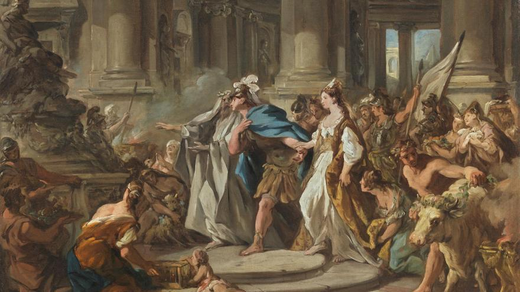

Medea

Medea es una figura compleja y fascinante de la mitología griega. Hija del rey Eetes de la Cólquide y sobrina de la hechicera Circe, Medea es conocida por su habilidad en la magia y la medicina. Su historia se cruza con la de los Argonautas, liderados por Jasón, en su búsqueda del Vellocino de Oro. Medea es un personaje central en numerosas obras antiguas, siendo la tragedia Medea de Eurípides una de las representaciones más poderosas de su historia.
Cuando Jasón llega a la Cólquide en busca del Vellocino de Oro, Medea se enamora de él y decide traicionar a su familia y patria para ayudarlo. Utiliza sus conocimientos mágicos para permitir que Jasón supere las pruebas impuestas por su padre. Juntos huyen a Grecia, donde se casan y tienen hijos. Sin embargo, en Corinto, Jasón decide abandonarla para casarse con Glauce, hija del rey Creonte. En un acto de furia y desesperación, Medea asesina a Glauce, a Creonte y a sus propios hijos, y escapa en un carro volador enviado por el dios Helios.
Medea representa el arquetipo de la mujer traicionada que se rebela contra la estructura patriarcal. Su historia es una poderosa metáfora sobre el amor, la venganza y los límites de la razón. La tragedia que encarna es tan extrema que sigue siendo objeto de debate moral y artístico hasta hoy. Además, Medea simboliza el conflicto entre la barbarie (por ser extranjera) y la civilización griega, siendo muchas veces vista como un “otro” inquietante dentro del mundo helénico.
Aunque Medea es originaria de la Cólquide (en la costa oriental del Mar Negro), gran parte de su tragedia se desarrolla en Corinto, una ciudad-estado del istmo griego, donde Jasón busca rehacer su vida a costa de ella.